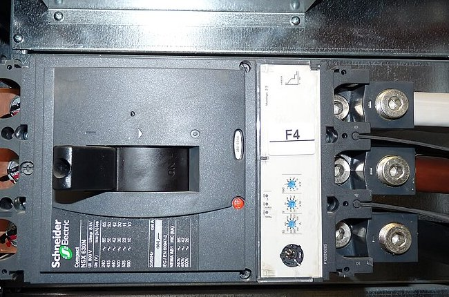
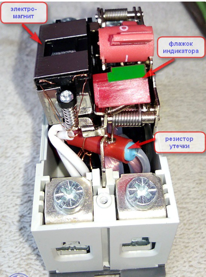

Средства автоматизации и управления
Нажмите функцию — автомат защищает цепь и сам отключает повреждение
Выберите режим — на разрезе видно, какой узел срабатывает. Узел можно нажать отдельно
Включён · контакты замкнуты
Двигайте ток — сначала греется биметалл, при КЗ мгновенно бьёт электромагнит
Двигайте ток КЗ — катушка втягивает якорь и бьёт по защёлке
Двигайте ток и время — биметалл гнётся медленно, при КЗ не успевает
1,5 In · пластина гнётся
Выберите B, C или D — тепловая ветвь общая, полоса отсечки сдвигается вправо
I = 2 In · тепловая ветвь
Бытовой выбирают по букве B, C или D. Промышленный — по току КЗ, выдержке и уставкам
В шкаф с двигателем ставят промышленный, не бытовой с буквой C
Слева фото блока на автомате, справа как он устроен

Измеряет ток и отключает, если ток выше уставки
Чем больше ток, тем короче выдержка. Щёлкните ступень
L: ток чуть выше Ir, блок долго ждёт и только потом отключает.
Щёлкните блок — что он делает внутри расцепителя
Микропроцессор считает ток, сравнивает с уставками и решает.
Четыре причины ставить электронный блок. Щёлкните карточку
Промышленный объект: оборудование, селективность, мониторинг, удалённое управление.
Две катушки работают наоборот. Движок показывает, что происходит с защёлкой
Un в норме: ток в катушке, поле держит защёлку, контакт включён.
Двигайте утечку — сумма токов в кольце не ноль, расцепитель срабатывает
Двигайте утечку: к нагрузке и обратно должны совпасть
К нагрузке 200 мА, обратно 200 мА. Сумма в кольце 0.
Подписи на фото — части с прошлой схемы
Электромагнит срывает защёлку. Резистор задаёт ток кнопки «Тест».

Три разных аппарата. Щёлкните аварию — кто отключится
АВ защищает кабель. УЗО — человека. ДИФ делает и то и другое.
Одна линия розеток. Двигайте ток, затем откройте кривую, короткое замыкание и кабель
16 А — норма: меньше автомата 20 А, кабель 25 А в запасе
Двигайте ток короткого замыкания. Вкладки — за счёт чего ввод успевает не отключиться
Короткое снял Q2. Ввод включён, другие линии работают
Нажмите узел — автомат в силовом щите, ПЛК видит статус и может отключить
Лекция 6. Трансформаторы и электрические машины →